DOMAIN 8
SOFTWARE DEVELOPMENT SECURITY
Domain 8 is focused on helping security professionals to understand, apply, and enforce software security, otherwise referred to as "application security." The application environment has become very complex, and organizations rely heavily on applications in every facet of the business. As applications have become more intelligent and functional, so have the challenges related to protecting and securing the application environment.
Even though this domain is titled "Software Development Security," it not only focuses on the development life cycle of applications and how security needs to be involved right from the start and throughout the development phases of applications and systems, but also during the entire life of the applications, including the operations phases and decommissioning and disposal phases. In other words, security needs to be involved during an application's entire life cycle, not just the development phase.
8.1 Understand and integrate security in the software development life cycle (SDLC)
8.1.1 Security's Involvement in Development
CORE CONCEPTS |
|

As mentioned above, security needs to be an integral part of the development process, and as we've mentioned many times in this book, the best type of security is what is designed into an architecture. This is especially true for applications. Security needs to be involved from the perspective of designing the right level of protection, based on requirements, and therefore needs to be involved at the early phases of software development and throughout each of the subsequent phases.
Similar to when a system reaches end of life and is retired, when an application reaches end of life, security must also be involved to ensure proper archival and disposal. Recall from Domain 4 that quite a lot of attacks take place at Layer 7, the Application layer. This is because so much functionality in the form of applications is available at this layer. Unfortunately, during the development process this functionality is often not considered from the perspective of an attacker, and unforeseen vulnerabilities and potential for exploit often result. Additionally, security is often not involved from inception and throughout the software development process. It typically is tacked on at the end, and this simply does not work. It's very cost inefficient for one thing, and oftentimes it fails to cover all the security needs or gaps. Security should be involved from the beginning, through the deployment and use phases, and all the way to the retirement phase. The entire life cycle should include security at each stage.
Understand when security should be considered as part of the SDLC
Many concepts covered in Domain 8 have already been covered in one manner or another in other domains. Security needs to be included as an integral part of the software development life cycle (SDLC) as well as the system life cycle (SLC). As the name suggests, the SDLC focuses on the development of an application; the SLC picks up at the point where an application is put into production and focuses on use and testing, changes, decommissioning, and disposal.
8.1.2 SDLC and SLC
CORE CONCEPTS |
|
|
|
|
Figure 8-1 depicts the SDLC/SLC and how the two relate to each other.
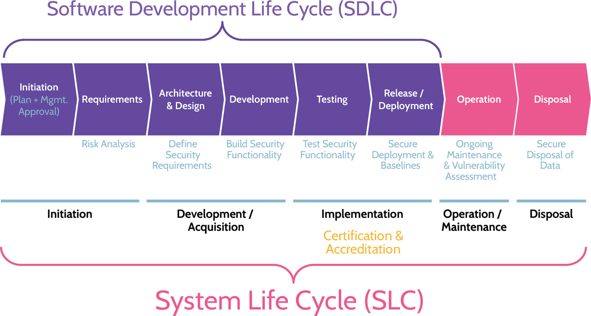
Figure 8-1: SDLC Phases
Understand the flow of the SDLC/SLC and what happens at each phase, specifically where securityrelated activities are concerned
The key thing to focus on is the flow and what happens during each phase, because different methodologies use different names for the same essential steps. In fact, it's quite common for companies to mix and match software development methodologies-agile and structured development, for example, are two common approaches often used to save time and money. For similar reasons, agile is a term found in other contexts too, like internal audit and process development. Though the goals of agile are efficiency and cost-effectiveness, quality is not sacrificed in the process. Both goals are met through the utilization of skilled teams composed of subject matter experts, who can adapt and change quickly to meet specific needs immediately at hand. Regardless of the approach-agile or structured, or anything else-security needs to be considered, ideally as early as possible and throughout each of the phases
Understand at which phase threat modeling should take place and how these results inform the following phase
The SDLC/SLC include management involvement and approval as well as post-deployment activities related to operations, including decommissioning and disposal. Regardless of the phase, security should be involved. For example, during the operations phase, changes are often desired or necessary, and change management helps drive them in an orderly manner. Security in this context helps to ensure that the desired changes meet requirements from a security perspective, and security should ultimately be part of change approval. Unfortunately, many organizations fail to include security as part of change control committees, which should also include senior management, application owners, technology representatives, and so on.
It's important to pay close attention to the text underlying each phase of the SDLC, especially where the requirements and architecture and design phases are concerned. During the requirements phase, security should be considered in the form of risk analysis related to the application being developed. Risk analysis continues through to the architecture and design phase, where the architecture of the application is considered in the context of existing infrastructure and systems. Also at this point, specifically where design is concerned, threat modeling is used to determine what security elements should be incorporated into the design of the application. At this point, the application is ready to be coded (development phase), and security can be built into it proactively. It should be noted that portions of the testing phase can overlap with the development phase-specifically static testing/code review can be conducted as units of code are completed. However, the bulk of testing-static (SAST), dynamic (DAST), and fuzz-will take place in the testing phase. This phase of the SDLC is critical and should be comprehensive to include all considerations-normal, error-prone, and malicious-related to usage of the application. Additionally, as part of the transition from testing to release/deployment (SDLC) or during the Implementation phase (SLC), certification/accreditation are performed.
Development and Maintenance Life Cycle
Historically, development methodology has typically followed what's known as a "waterfall" approach, which is simply a phased, step-by-step approach to software development. To move to the next phase, the previous phase must be completed. Sign-offs and approvals mark each phase. As seen in Figure 8-2, the process resembles a waterfall-moving from the top to the bottom in succession. This model includes an inherent flaw, however, in the fact that going backward is not possible. Similar to an actual waterfall, where water can only flow downwards, the waterfall development process only allows downward movement. To further illustrate this point, imagine an application owner wants to develop a new software application. Their first step is to contact technology. In order to best understand the application requirements and start translating those into technical and other specifications, most likely, business analysts will be engaged to effectively and efficiently facilitate the need to bridge technology and business requirements related to the application. The business analysts will spend time with the application owner, asking questions and trying to understand what the owner wants to accomplish with the application. Then the analysts will return to technology and begin the process of developing the application. Here's the problem: at this point, the owner is not involved anymore, but they're still interested in observing all phases of the development process because they're invested in the application. As this process unfolds, of course the owner is likely to come up with new ideas and other feedback.
How does the development team respond? If they're following a waterfall approach, the owner will likely be told that going backward is not possible. The design is frozen, and that's what will be built; however, all those requests can easily be accommodated later as part of change management, which costs more time and money. This is problematic, and the software development industry has attempted to develop new methodologies to address this and other issues.
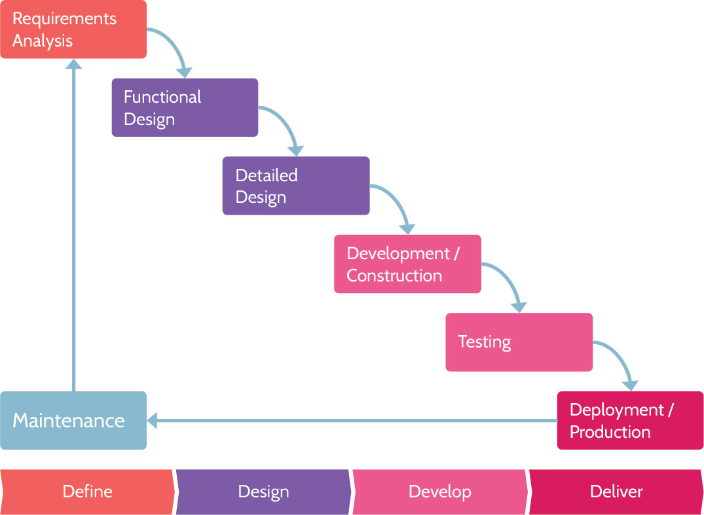
Figure 8-2: Waterfall Model Phases
8.1.3 Development Methodologies
CORE CONCEPTS |
|
|
|
|
|
As noted above, in response to structured and potentially timely and costly software development approaches like waterfall, the industry has developed innovative approaches to accelerate development and still produce quality code. Each of these methodologies reflects the waterfall model, simply with a variation in approach. For example, spiral is aptly named because it allows for the development process to circle back on itself to address an issue or functionality that was part of a previous phase. Similarly, agile refers to a smaller, team-based approach that allows for efficient and cost-effective parallel development. These different approaches have been summarized in Table 8-1.
The bottom line is this: Whatever methodology or combination of methodologies is used for software development, security must be included throughout the process.
Be familiar with various development methodologies and key characteristics of each
|
Waterfall |
Complete each phase of development, before flowing-waterfalling-down to the next phase, until the process is complete. This model does not allow a previous phase to be revisited. |
|
Structured Programming Development |
A logical programming approach that is said to be foundational to object-oriented programming. Structured programming places heavy emphasis on structured control flow and aims to improve clarity, quality, and development time. |
|
Agile |
Divide the development process into multiple, rapid iterations of defining, developing, and deploying, with heavy customer interaction throughout the process. |
|
Scaled Agile framework |
A version of the Agile methodology that is designed to allow large organizations with many teams to collaborate and effectively deliver software. |
|
Spiral Method |
A risk-driven development process that follows an iterative model while also including elements of waterfall. The spiral model follows defined phases to completion and then repeats the process; this model resembles a spiral when mapped to paper. |
|
Cleanroom |
Development process intended to produce software with a certifiable level of reliability by focusing on defect prevention. |
Table 8-1: SDLC Methodologies
Understand the different priorities of waterfall and agile methodologies
Waterfall versus Agile
Figure 8-3 depicts waterfall and agile methodologies. Don't focus as much on the phases of waterfall but rather that it's a phased approach. Agile, in comparison, adapts the waterfall methodology and approaches development from the perspective of smaller, highly skilled and motivated teams. Additionally, agile is more focused on early and often delivery of code via what are known as "sprints" led by an agile scrum master.
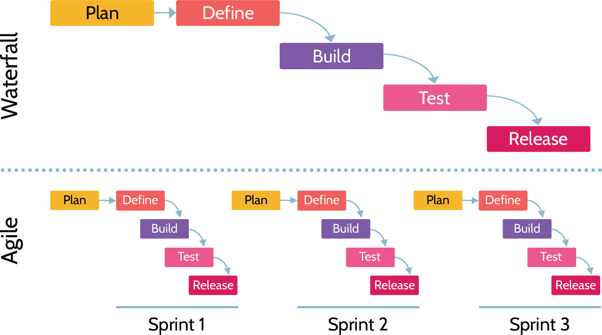
Figure 8-3: Waterfall vs. Agile Methodology
Agile Scrum Master
Understand the role of a scrum master in agile development
With Agile, each team works very closely and in a very time efficient manner, while all of the team's efforts are coordinated by a person known as the Scrum Master. The Scrum Master understands how all the team efforts fit together and can therefore effectively and efficiently lead activities. Additionally, the Scrum Master shields team members from external interruptions, which further enhances productivity. Scrum Masters are typically hyperfocused on completing tasks as quickly as possible and hopefully not at the expense of security. Other advantages of having a Scrum Master include the following:
 Shields team from external interference
Shields team from external interference
Enforces scrum principles
Facilitator and removes barriers
Enables close cooperation
Improves productivity
8.1.4 Maturity Models
CORE CONCEPTS |
|
|
|
Maturity models are another important set of methodologies that can improve the development process, including security. One of the most important maturity models is Capability Maturity Model Integration (CMMI).
Capability Maturity Model Integration (CMMI)
Know the name and characteristics of each level of the Capability Maturity Model Integration
Capability Maturity Model Integration (CMMI) is a set of best practices that focus on building key capabilities and benchmarking them to drive business performance. It essentially helps an organization to understand how mature their processes are, what they do well and what they need to improve. CMMI includes six maturity levels, which are used to measure the maturity level of processes. The maturity levels are shown in Table 8-2 and Figure 8-4.
|
Maturity Level 0: Incomplete |
This phase is unknown and ad hoc, indicating that work may not be getting completed. |
|
Maturity Level 1: Initial |
This is a reactive and unpredictable stage. It indicates that work is getting finished, but often coming in over budget and late. |
|
Maturity Level 2: Managed |
This stage indicates that projects are managed and planned. The tasks are performed, key metrics are taken, and the project is controlled. |
|
Maturity Level 3: Defined |
In this phase, the organization is being proactive as opposed to reactive. There are standards across the organization that guide programs, portfolios and projects. |
|
Maturity Level 4: Quantitatively Managed |
This is a controlled and measured stage. It indicates that an organization is driven by data, using it to measure performance improvement objectives. These objectives meet the needs of stakeholders and are predictable. |
|
Maturity Level 5: Optimizing |
This phase is flexible and stable. The organization is focused on continually improving and it is able to pivot when change and opportunity present themselves. The stability of the organization allows it to innovate and be agile. |
Table 8-2: The Six CMMI Maturity Levels
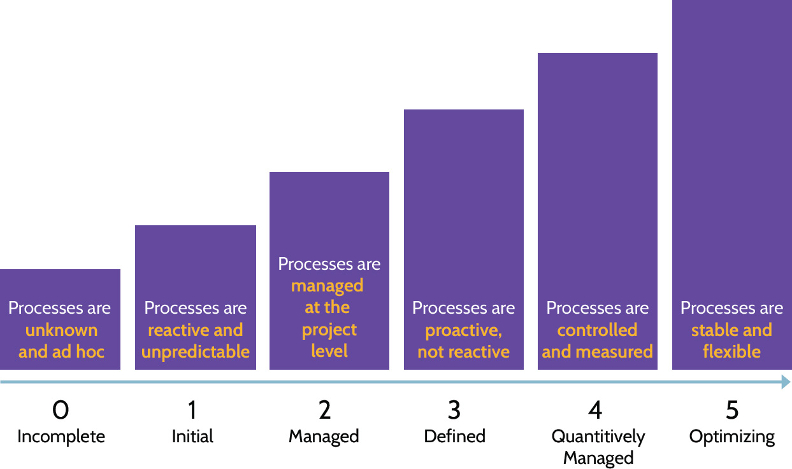
Figure 8-4: The Six CMMI Maturity Levels
Software Assurance Maturity Model
OWASP's Software Assurance Maturity Model (SAMM), is, in OWASP's words, "to be the prime maturity model for software assurance that provides an effective and measurable way for all types of organizations to analyze and improve their software security posture. OWASP SAMM supports the complete software life cycle, including development and acquisition, and is technology and process agnostic. It is intentionally built to be evolutive and risk-driven in nature." (https://owaspsamm.org/model/)
SAMM consists of three maturity levels:
Level 1-Initial Implementation
Level 2-Structured Realization
Level 3-Optimized Operation
Maturity levels can be measured from a coverage and a quality perspective based upon quality criteria and a software assurance scoring model that can be referenced by auditors and organizations.
SAMM looks at software assurance from the high-level perspective of five business functions:
1. Governance
2. Design
3. Implementation
4. Verification
5. Operations
Operation and Maintenance
The success of software development is not pinned to the release of an application to production. In fact, it could be argued that long-term successful-and secure-software releases happen as a result of ongoing operation and maintenance that includes monitoring, periodic evaluation, and patching.
Individually and collectively, the three actions help ensure software that functions properly and is secure. Proactive monitoring can uncover security-related problems before they become widespread. Likewise, periodic evaluation that dives deeper can, among other things, confirm that the best components and coding techniques are in place to ensure continued security of the application. When monitoring and periodic evaluations are performed diligently, patching typically follows. Patching may be done for any of several reasons, the most common being to secure a vulnerability in the code or to enhance the functionality of the application.
Change Management (Review)
Among the many topics covered in Domain 7-Security Operations, change management was covered in 7.9.1 Change management. As a review, change management ensures that costs and benefits of changes are analyzed and changes are made in a controlled manner to reduce risks. This applies in the context of operations as well as in the context of software development. As Figure 8-5 shows, a change request might be initiated for one of several reasons. It might come in the form of a service request, as part of the incident management process, or as part of a service level agreement (SLA). Additionally, when considering software development-related changes, configuration management and release management must be integral components of the change management process to best assure stable and secure releases.
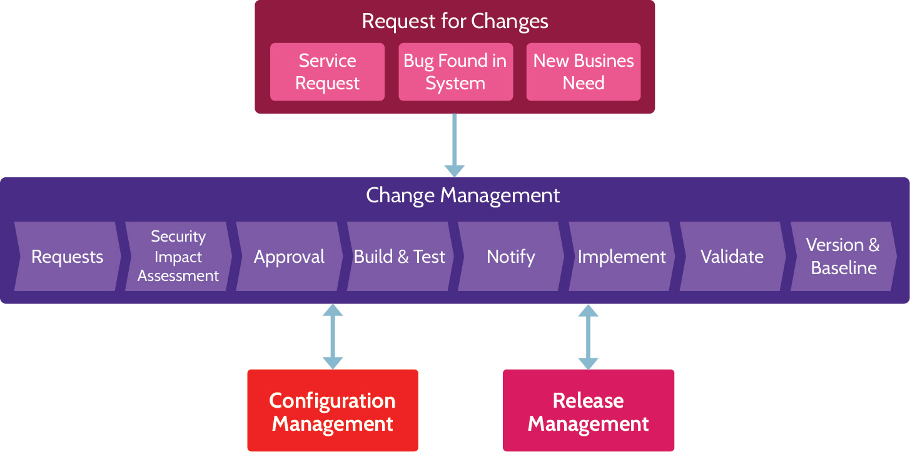
Figure 8-5: Request for Change (RFC) Process
8.1.5 DevOps
CORE CONCEPTS |
|
|
Integrated Product Team (IPT)
An integrated product team (IPT) is a team of skilled professionals who each bring specific expertise and skills to a development project. At any given point in time, one or numerous members of the team may be more fully engaged with the project, but collectively the entire team is committed and invested in delivering a secure and functional product as well as ensuring this remains the case throughout the product's life cycle.
At its core, the IPT is a fancy name for DevOps, depicted in Figure 8-6, which is a software development approach that aims to unify:
Software development
Operations
Quality assurance
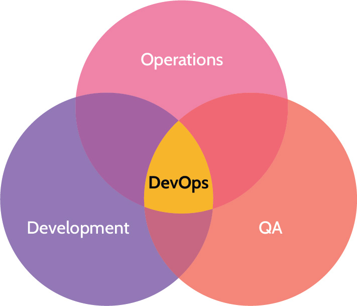
Figure 8-6: DevOps
DevOps refers to the integration and inclusion of team members from all relevant areas from the very beginning. The goal of this unification is to create a more agile and responsive environment, which is ultimately more efficient and desirable than having separate teams that must complete their work before passing the project along to the next team. Separate teams often leads to a lack of collaboration and aligned pursuit of common goals. It also often leads to security being tacked on at the end of the project instead of at the beginning and throughout the project.
DevOps Security
Know when security should be involved with DevOps
As noted above, many traditional security techniques, for example, items like penetration tests, security analysis, and so on are too slow for rapid iteration of DevOps.
However, DevOps should ideally be referred to as DevSecOps, or even better, SecDevOps. This is where security is an integral part of the development process.
Incorporating security into DevOps should include the following components and approach:
Plan for security
Strong engagement between developers, operations, and security
Engage developers
Develop using secure techniques and frameworks
Automate security testing, for example, using a robust CI/CD pipeline
Use traditional techniques sparingly
Combining Development Methodologies
Many organizations combine methodologies to suit their specific needs, and this approach can work with DevSecOps.
8.1.6 Canary Testing and Deployments
CORE CONCEPTS |
|
Understand what is meant by the term canary testing and deployment
The phrase "canary in a coal mine" refers to a practice utilized by early miners to ensure the safety of mining teams deep underground. The teams would carry caged canaries into the tunnels, and if dangerous gases-such as carbon monoxide-collected in the mine, the canaries would begin to have trouble breathing and thus act as an early warning system so the miners could escape a similar fate. In a similar vein, canary testing and deployments refers to a software deployment approach where new code and features are pushed out to a small subset of users as an initial test, before release to all users. Taking this approach allows problems to be identified and resolved before a full release.
Smoke Testing
Smoke testing is another commonly used type of testing in software development. Smoke testing focuses on quick preliminary testing after a change is made to identify any simple failures of the most important existing functionality that worked before the change was made.
8.2 Identify and apply security controls in software development ecosystems
8.2.1 Software Development Overview
It is important to have a basic understanding of how applications are written. First of all, a programming language is used, and programming languages have evolved over time to become quite powerful and even intelligent. In fact, incorporating security into applications is much easier today because of advancements in programming languages and related tools.
Programming languages have evolved over the years as generations, as depicted in Table 8-3.
Generation 1 and 2 refers to low-level programming languages, like assembly language, which allowed programmers to write programs more easily, but ultimately the CPU would be tasked with translating everything into binary code, into 0s and 1s.
From early generation languages, high-level languages evolved. Generation 3 and 4 languages, structured and object-oriented languages like COBOL, PL/1, Fortran, and BASIC, became more commonplace, and now Generation 5 languages-natural programming languages like Prolog-are coming to the forefront. Even today, however, with newer languages becoming more prevalent, legacy applications written in languages like COBOL are still in production.
|
Generation |
Type of Language |
Examples |
|
|
Low-level languages |
1 |
Machine languages |
Strings of numbers that CPU can process |
|
2 |
Assembly languages |
Cryptic as they use symbolic representation |
|
|
High-level languages |
3 |
Structured languages |
Pascal, C, Cobol, Fortran |
|
4 |
Object oriented languages |
C++, Visual Basic, Java |
|
|
5 |
Natural language |
Prolog |
|
Table 8-3: Programming Language Generations
Libraries
By simple definition, a library is a collection of resources. The collection could be resources specific to one topic, or it could be resources that cover a vast array of topics. Code libraries are frequently used in application development and include resources such as documentation, code snippets, functions, and other elements necessary to develop and configure applications that function properly and, ideally, adhere to accepted standards. Why reinvent the wheel-recreate some code that someone else has already written-when it already exists in a library?
Like a public library that houses a myriad of books, publications, and other resources that can be utilized by anybody with a library card, a software library is typically organized in a manner that allows code to be used by disparate applications that have no relationship to each other. Additionally, libraries allow elements of programs and code to be reused again and again.
Two primary types of libraries exist: static and dynamic (runtime).
If code of the library is accessed while the invoking program is being built, the library is referred to as a static library. Alternatively, if the library is called after the program is executed, the library is referred to as a dynamic or runtime library.
Tool Sets
In the context of software and application development, a tool set is a compilation of development tools and utilities that aid the creation of applications. Tool sets are more often referred to as software development kits (SDK), and tools and utilities typically include a compiler and debugger as well as application programming interfaces (APIs), documentation, libraries, and perhaps a development framework. SDKs are often tailored to the development of applications for specific hardware-desktop, laptop, mobile device, for example-and operating system platforms, like iOS, Linux, or Windows. SDKs are typically utilized in the context of larger integrated development environments.
Integrated Development Environment (IDE)
An integrated development environment is a software application that serves as an umbrella for purposes of software development. It's essentially a one-stop shop that provides the tools programmers need to perform their development tasks. Typical IDEs include the following:
Code editor
Compiler
Debugger
Automation tools
By providing integrated components, an IDE allows programmers to work efficiently and effectively. Some examples of IDEs include Microsoft's Visual Studio, NetBeans, IntelliJ IDEA, Eclipse, and Code::Blocks. Factors that differentiate one IDE from another include: cost-free/open source or licenses (typically annual subscription), programming languages supported, and learning curve. Some IDEs are quite powerful but difficult to learn; others are very beginner-friendly. Determining which IDE is optimal for a given coding environment is really a matter of prioritizing required and desired features and then exploring the IDE landscape to identify the best solution.
Programming Language Translators
Even though better ways to program have evolved over time, computers have not evolved in a similar manner. In fact, computers today still only understand the language they understood fifty to sixty years ago-binary code or machine language. This explains why tools like assemblers, compilers, and interpreters exist. Their job is to take a given programming language and render it as machine language that the computer can understand.
Assemblers read entire programs and then convert low-level assembly language into machine language.
Compilers read entire programs and then convert high-level language into machine language.
Interpreters convert high-level language one line at a time into machine language at runtime.
Runtime
In the context of computing and software, runtime refers to the time when code is being executed on a computer.
Continuous Integration, Delivery, and Deployment
CI/CD stands for continuous integration, continuous delivery, although sometimes sources switch out "delivery" for "deployment". Continuous integration involves automating many of the steps for committing code to a repository, as well as automating much of the testing. This allows code changes to be frequently integrated into the shared source code and ensures that a bunch of testing gets done easily.
Continuous delivery also involves automating the integration and testing of code changes, but it also includes delivery, automating the release of these validated changes into the repository. Continuous deployment takes things a step further and automatically releases the code changes into production so that they can be used by customers. With continuous deployment, code changes can be automatically put into production without further human intervention, as long as it passes through all of the testing and there are no issues. If there is an error in any of these steps, the changes will get sent back to the developer. Figure 8-7 highlights how these three processes overlap.
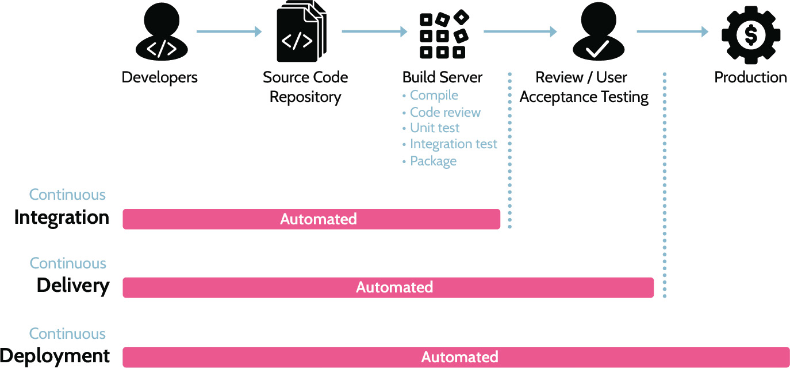
Figure 8-7: The CI/CD Process
Software Configuration Management (SCM)
As the name suggests, software configuration management specifically focuses on managing changes in software and is part of the overall configuration/change management. Like other configuration/change management activities, SCM best practices include baseline establishment and revision control, build and process management, and the facilitation of strong teamwork among the software development team. Though not comprehensive, a summary of some of the most notable benefits of SCM is below:
Process to systematically manage, organize, and control the changes in the documents, codes, and so on during the SDLC
Part of overall configuration management/change management
Increased productivity while minimizing mistakes
Code Repositories
A code repository is, in its simplest form, a storage location for software and application source code. Popular code repositories include Github, SourceForge, Project Locker, and SourceRepo, among others. Most code repositories support public, open source projects as well as private projects, though some, like Project Locker, focus entirely on private, enterprise-grade repositories.
Most code repositories offer much more than simple storage. In addition to hosting project code, repositories typically provide project versioning and release control, support for code review, interaction with others through discussion forums, bug tracking, document management, and patches.
Application Security Testing
Domain 6-Security Assessment and Testing-covers application security testing, and specifically 6.2.1 Testing Techniques covers static application security testing (SAST), dynamic application security testing (DAST), and fuzz testing. Recall that each method differs from the others, as noted in Table 8-4. Thus, the most effective application security testing incorporates all three techniques.
|
Static (SAST) |
Dynamic (DAST) |
Fuzzing |
|
|
|
|
Table 8-4: SAST, DAST and Fuzzing
Another type of testing is Interactive Application Security Testing (IAST). It combines elements of SAST and DAST. Testing is conducted while the application is running and the source code is visible.
Secure Programming
Looking back at early programming methods, it's clear that encompassing and meeting security requirements was a difficult task. Over the years, programming methodologies have evolved-including security-and meeting related requirements has become much easier. In fact, most modern programming languages require an understanding of built-in security capabilities to code applications properly. If security requirements related to an application are understood, the inherent security capabilities of the programming language can be incorporated into the finished product.
By focusing on security from the beginning of a project that follows a SecDevOps approach, the right people can help define necessary security requirements. So, the information owners, the business people, the technology experts, and others can all help define, identify, and understand the needed security components.
This is what's important and points to security capabilities that should be incorporated into applications. As noted earlier, many newer programming tools facilitate the integration of these capabilities as part of the overall system. For example, many tools include inheritance capabilities. Inheritance in this context refers to new objects-pieces of code-that automatically inherit characteristics of previously created objects. This capability serves several purposes:
Eliminates the need to program the same characteristics into multiple objects
Consistent programming and security can be easily propagated to new objects
This implies that the starting point must incorporate sound programming practices; otherwise, weak or missing security characteristics could result, leading to an overall very vulnerable application.
Encapsulation, discussed in the context of remote and VPN connections, is also found in programming. As a quick review, encapsulation means tunneling. In programming, encapsulation involves wrapping an object-a piece of code-to hide certain information or characteristics or to adapt to specific application needs.
From a security perspective, code can adapt and exhibit characteristics of polymorphism and polyinstantiation. Like a polymorphic virus, polymorphic code can change. However, unlike polymorphic viruses, which are malicious, polymorphic code changes to meet certain needs or requirements, and it does so for the benefit of the application.
The bottom line is that addressing security to the level needed is much easier today because the tools used to create programs and applications include this functionality by default. A summary of some key terms is provided in Table 8-5.
|
Inheritance |
The ability of an object-a piece of code-to inherit characteristics of previously created objects. |
|
Encapsulation |
The idea that an object-a piece of code-can be placed inside another. Other objects can be called by doing this, and objects can be protected by encapsulating or wrapping them in other objects. |
|
Polymorphism |
Like a polymorphic virus that can change its behavior to avoid detection, polymorphism in programming refers to code that can change based upon requirements. Think of it as "smart code" that can understand the environment and respond accordingly to meet the needs presented by objects in the environment. |
|
Polyinstantiation |
Polyinstantiation refers to something being instantiated into multiple separate or independent instances, and it is covered in 8.5.4 Secure Coding Practices in detail. |
Table 8-5: Inheritance, Encapsulation, Polymorphism and Polyinstantiation
8.2.2 Code Obfuscation
CORE CONCEPTS |
|
|
Understand the term code obfuscation and the three primary types of obfuscation
The term code obfuscation refers to hiding or obscuring code to protect it from those who are unauthorized to view it. More specifically, code obfuscation is intentionally creating source code that is difficult for humans to understand, which makes it difficult to reverse engineer, or it conceals the purpose of the code. The three main types of obfuscation are outlined in Table 8-6.
|
Lexical Obfuscation |
Modifies the look of the code (changing comments, removing debugging information, and changing the format of the code) Easiest but weakest form of obfuscation |
|
Data Obfuscation |
Modifies the data structure |
|
Control Flow Obfuscation |
Modifies the flow of control through the code (reordering statements, methods, loops, and creating irrelevant conditional statements |
Table 8-6: Types of Obfuscation
Understand a significant potential disadvantage of using code obfuscation
One caveat with regards to code obfuscation relates to a disaster. Specifically, what recourse does an organization have if application code has been obfuscated using one of the techniques noted above? For example, if lexical obfuscation has been used, an organization may have little to no recourse to bringing an application back online quickly. With this in mind, a software vault should be used to securely store unaltered mission critical source code, and planning around the same should be incorporated into an organization's BCM plan.
Security of the Software Environments
Within the software development environment, most organizations employ the "best practice" of separating specific components. As Figure 8-8 shows, separation of the development and production environments from each other as well as separation of the test and QA environments is prudent. In this same vein, security should be present as an advisor in each context.
Figure 8-8: Security of the Software Environments
8.2.3 DBMS, Concurrency, and Lock Controls
CORE CONCEPTS |
|
|
|
|
|
|
|
|
One of the most important environments driven by applications is a database environment. Databases have been in use for decades. They allow us to store sensitive and valuable information that can be accessed and drive business decisions. It follows that database environments require attention to security to protect the information and ensure only authorized users have access to it. Security needs to exist within the database itself as well as within the applications that access the database.
The architecture is broken down into components, and each component is secured. The underlying hardware and software need to be secured, the proper tools that allow access to the data need to be secured, and users need to understand usage policies related to the information, security responsibilities, as well as how to properly use the tools that allow access to the data. Of course, the data itself must be secured and protected.
Database Management Systems (DBMS)
A database architecture is composed of several components, typically including those noted in Table 8-7.
|
Hardware |
Hardware refers to the computer-usually a dedicated server-upon which other DBMS components reside. DBMS hardware usually includes a dedicated RAID controller and associated storage as well as redundant power, cooling, and network components. |
|
Software |
Software refers to the operating system (OS) as well as the application that supports the database and allows users to interact with database contents. Application security is very important to protect the underlying data. |
|
Language (e.g. SQL) |
Language refers to the syntax and commands that make user interaction with database contents possible. Specifically, SQL stands for "Structured Query Language," and many dialects of SQL exist, including T-SQL, MySQL, PostgreSQL, and SQLite. |
|
Users |
Users refers to the people who need to work with data stored in a DBMS. Most often, users interact with data through a software interface; other times, super and admin users might work directly with data through a query feature built into the DBMS application. |
|
Data |
Data refers to all the important data stored in a DBMS that should be protected by a well-planned architecture that includes security in every component, including hardware, software, and user management. |
Table 8-7: DBMS Components
Relational Database
Like most technology over time, databases have evolved too. In the past, databases were hierarchical, flat files stored on tapes. Today, relational database management systems (RDBMS) are the most frequently used database systems. As the name suggests, RDBMS allow objects and data to be stored and linked together-to be related-to drive better decision-making. Information can be related to other information and thereby drive inference and deeper understanding. A database can contain one or more tables of data as depicted in Figure 8-9.
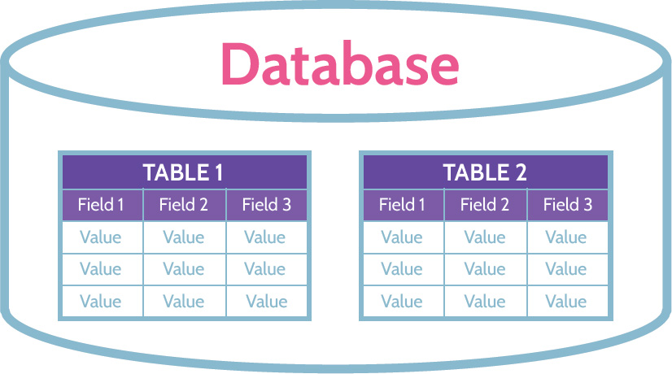
Figure 8-9: Relational Database Table
Attributes and Tuples
RDBMS are structured as two-dimensional tables composed of rows and columns as depicted in Figure 8-10. This structure allows tables of information to be linked together, which allows inference to take place. In addition to what might be viewed as traditional terminology, it's important to understand other words that mean the same thing as rows and columns. Columns or fields are called attributes, and records or rows are called tuples.
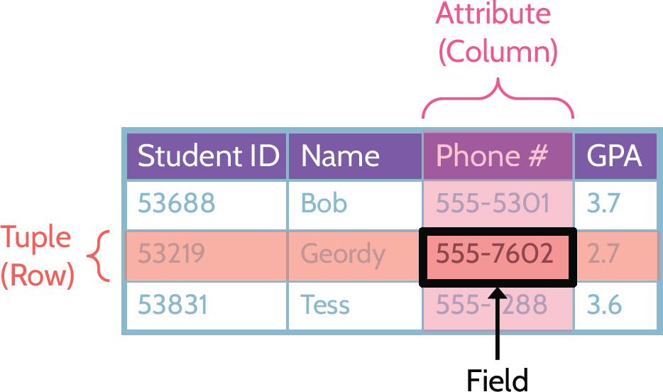
Figure 8-10: Database Table Structure
Primary and Foreign Keys
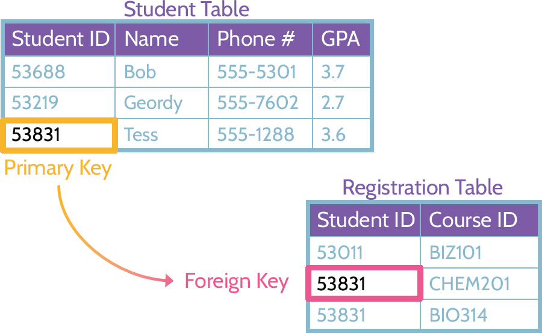
Figure 8-11: Primary and Foreign Keys
Understand how primary & foreign keys function together to maintain referential integrity within a database
Figure 8-11 depicts two tables: a student table and a registration table. The student table contains information that would typically relate to a student; the registration table contains information about course registrations. To gain more information about a student and their courses, it makes sense to link the tables together. To do so, some type of common denominator must exist in each table. In this example, the common denominator is "StudentID," which functions as a unique identifier and is also known as the primary key. The entire purpose of a primary key is to make each row-each tuple-unique. In the registration table, StudentID also exists, which allows the two tables to be linked together. When the primary key from one table references the same key in another table, the referenced key is known as the foreign key. In this example, the primary key is StudentID in the student table; the foreign key is StudentID in the registration table.
Understand the meaning of common database terms
Another important requirement related to primary keys is that they must be valid. In other words, validation of the primary key takes place when a record is added to a table. This typically means that the key is checked against rules to make sure the data conforms to requirements like length, data type, uniqueness, and so on. This validation process ensures what's known as referential integrity, which is a critical component of relational database systems. In this example, referential integrity ensures that every instance of StudentID in the student table is valid and that every instance of StudentID in the registration table exists in the student table.
A summary of key database terms has been included in Table 8-8.
|
Tuple |
Single row of a two-dimensional table within a relational database |
|
Attribute |
Single column of a two-dimensional table within a relational database |
|
Field |
The intersection of a row (tuple) and a column (attribute) is a single field of data |
|
Primary Key |
One or more columns whose values uniquely identify a tuple (row) within a relational database. For example, AuthorID in the authors table. |
|
Foreign Key |
One or more columns whose values in a table refer to the primary key in another table. AuthorID would be the primary key in the authors table. Any books in the books table by an author would have a foreign key referring to the author in the authors table. |
Table 8-8: Key Database Terms
Concurrency and Lock Controls
Understand how concurrency and locks function to protect the integrity of databases
Among security issues that exist within the context of database environments, concurrency, locking, and controls related to each are essential to consider. Databases are valuable for several reasons, including that they contain up-to-date and relevant information for purposes of decision-making. This means that multiple people may sometimes attempt to access or update the same database element at the same time. When this happens, integrity issues could arise. As a result, the logic and controls to handle concurrency (the ability for multiple processes to access or change shared data at the same time) and locks are standard within DBMS. Locks are used to protect the integrity of data elements. For example, when User A accesses an element and begins making changes, the element is locked. Thus, another User B is prevented from updating the element. User B can only view the element. Once the original User A is finished with their operation, the element is unlocked and released for other users to access and edit
Concurrency and locks are summarized in Table 8-9.
|
Concurrency |
Lock Controls |
|
Ability for multiple processes to access or change shared data at the same time |
Prevent data corruption when multiple users try to write to the database simultaneously. A record can be locked. |
Table 8-9: Concurrency and Locks
ACID
Understand the acronym ACID and what each term means
Related to concurrency and locks controls is specific functionality represented by the acronym ACID. ACID stands for atomicity, consistency, isolation, and durability and relates to how information and transactions in an RDBMS environment should be treated. It is important to understand what each term means, and Table 8-10, breaks down ACID in more detail.
|
A |
Atomicity - All changes take effect or None at all |
|
C |
Consistency - Consistent with the Rules |
|
I |
Isolation - Transactions are Invisible to other users until complete |
|
D |
Durability - Completed changes will not be Lost |
Table 8-10: ACID
8.2.4 Metadata
CORE CONCEPTS |
|
The term metadata refers to information that offers insights about other data. Essentially, it's data about data. For example, metadata about a file would include creation date, last modified date, file owner, file size, and so on.
8.2.5 Development Ecosystems
CORE CONCEPTS |
|
|
Different types of development ecosystems exist, and several of them were noted at the beginning of Section 8.2. They are: continuous integration; delivery and deployment (CI/CD); security orchestration, automation, and response (SOAR -this is covered separately in section 7.2.3); and Software Configuration Management (SCM). Though each of these has a different focus, they share similar characteristics:
The use of automation to ensure consistency and quality
Efficient and effective delivery of product, results, and protection
Protection of the organization and partners/customers through a proactive focus on security
8.3 Assess the effectiveness of software security
8.3.1 Software Security Assessment Methods
CORE CONCEPTS |
|
This section is really a short review of Domain 6, Security Assessment and Testing; for more details, refer to Domain 6.
In order to assess the effectiveness of application security, testing should be conducted, and logs should be reviewed, among other things. Testing could include white box testing and black box testing as well as items like threat modeling and penetration testing. Security should be involved with:
Risk analysis and mitigation
Auditing and logging of changes
Logging and monitoring
Internal and external audit
Procurement process
Certification and accreditation
Testing and verification
Code signing
As noted above, certification and accreditation are parts of this process.
Certification is the comprehensive and technical analysis of something-an application in this case-to make sure requirements and needs are met. Accreditation is management's official decision and sign-off to implement a solution. Both activities relate to security's goal of providing confidence and assurance.
As noted earlier, this topic is a quick review of Domain 6, Security Assessment and Testing, and it covers both bullet points noted in the Official CISSP Certification Exam Outline:
Auditing and logging of changes
Risk analysis and mitigation
8.4 Assess security impact of acquired software
Does purchasing software preclude the need for security to be assessed? Many organizations do not have the time or resources to develop their own software, so they contract the development to a third party, or they purchase the software from a vendor. Regardless of the source of software-internally developed or externally purchased-security should always be involved with the process. Whether testing functionality or assessing potential vulnerabilities, security must be included.
When purchasing software, oftentimes the seller will not provide the source code-only the finished product. In cases like this, the purchasing company might ask that the source code be stored in escrow to provide ongoing access, regardless of what may happen with the seller over time (e.g., going out of business).
8.4.1 Acquiring Software
CORE CONCEPTS |
|
|
|
Software development should be underpinned by a strong focus on security from inception to deployment to retirement. The acquisition of software should require and receive the same level of attention and scrutiny. At a high level, the software acquisition process should follow a similar process as noted.
Software Assurance Phases for Acquisition
Planning/requirements
Contracting
Acceptance
Monitoring and follow-on
Based upon Software Assurance Phases for Acquisition, understand what steps should be included first with ANY acquisition of software
Software may be acquired in a multitude of legal and illegal ways. Some of the more common legal means of acquiring software include COTS, open source, third party, and managed services.
Commercial-Off-the-Shelf (COTS)
Among most organizations, COTS software is typically used, because it is often readily available to the general public, and it is user friendly. Additionally, active user communities often develop around COTS software that allow user support, software use scenarios and examples, troubleshooting, and bug reports to become a dynamic and collective community-based effort versus isolated user dependence upon the COTS provider. Examples of COTS software include Microsoft 365, antivirus, and security software as well as numerous other types of software, including enterprise resource planning (ERP), customer relationship management (CRM), point of sale (POS), billing, accounting, and invoicing, among many other COTS solutions.
Use of COTS software offers pros and cons.
Pros include:
Functionality of the product can be more easily verified/confirmed
Comparisons of similar products can be made
Third-party evaluation of the product can be made
Existing customers can be contacted
Software updates and patches are likely more readily available
Cons include:
Inability to conduct white box testing, due to code base not being available for examination
Possibility of the vendor going out of business
Support and related issues
Missing features and functionality
Vulnerabilities being identified and taken advantage of by malicious users as widely used software is more likely to be probed for weaknesses due to larger user base
Like when software is developed in house, the acquisition of COTS software should result from a correspondingly rigorous application of the SDLC, despite things like white box testing not being possible.
Understand how COTS and open source are similar and different from each other and pros and cons of each method of procuring software
Open Source Software
In many respects, open source software is very similar to COTS software, with one significant exception: unlike COTS, open source software is software with source code that anyone can inspect, modify, and enhance. As a general rule, open source software licenses invite collaboration among a user community. Furthermore, modification of code and incorporation of changes into projects can lead to enhanced functionality and new uses of the software. An organization may choose to use open source software for any of a number of reasons, including those noted below:
Control: the organization can thoroughly examine the code to make sure it is safe, and they can choose to modify or omit parts of the software.
Training: programming students can use open source software as a learning tool and invite feedback and scrutiny from a much wider audience.
Security: due to the "open" nature of open source software, vulnerabilities and issues that may impact the stability of the software are typically identified and corrected much more quickly. Additionally, missing functionality can be added just as quickly.
Additionally, open source software typically provides a level of stability not always found with COTS or proprietary software, because the ongoing viability of open source software is not dependent on the original creators. Rather, open source software-like larger COTS platforms-typically leads to the growth of communities around it and these communities provide ongoing care, support, and upkeep.
With all of this in mind, however, prior to using open source software in an organization, the software should be examined and treated as if it was being developed in house. The SDLC, or a similar security-centric approach, should be applied, and the code confirmed to be safe for use. Otherwise, due to the community-based nature of open source software, vulnerabilities-accidental or malicious in origin-could exist. A classic example of this centered around a popular piece of software called OpenSSL. Due to a simple programming error, a security hole was opened and later exploited in what became known as Heartbleed. Due to widespread use of OpenSSL around the globe, Heartbleed affected millions of devices.
Third Party
In the context of software development and acquiring software, third-party code is code developed by programmers not employed by the organization. Whether acting as an independent contractor or as an employee of a software development company, third-party programmers and their code should be held to the same level of scrutiny as other vendors and their software products. The SDLC process should be applied to the extent possible, in order to ensure that the application is secure and functions as expected.
Managed Services (e.g., Enterprise Applications)
Managed service providers (MSPs) offer IT infrastructure and support for businesses. They can install and manage a range of technologies, allowing their customers to focus on their core businesses. MSPs often provide things like network monitoring, security, backup and recovery, technical support and even things like enterprise applications. For small-to-medium businesses, it's often much more cost effective for them to engage an MSP than to run their IT infrastructure themselves. These days, many MSPs act as brokers and bundle cloud services for their customers.
Organizations should always properly assess the managed service provider to ensure that organizational goals and objectives are met, especially where security and privacy are concerned. Proper assessment would typically include:
Evaluation of SOC reports prepared by an independent auditor.
Site visits by senior management and key stakeholders to assess the managed service provider.
Discussions with existing customers of the managed service provider.
If applicable, industry and regulatory assessments of the managed service provider for the sake of specific needs relevant to the organization.
Cloud Services (e.g., Software as a Service (SaaS), Infrastructure as a Service (IaaS), Platform as a Service (PaaS)
We discuss the cloud service models in section 3.5.9. In this more specific context, the security function needs to be involved in the process of acquiring cloud services. Just like an organization's other stakeholders, security should be part of the process of choosing cloud services, as well as when assets are moved to the cloud. Organizations must conduct their due diligence whenever they are moving data or applications to the cloud. Another key thing to remember is the shared responsibility model. While the customer always remains accountable, they share both control and responsibility with the provider. Both parties must understand their responsibilities and the risks that they face. All of this should be written up as part of the agreement between the two parties.
8.5 Define and apply secure coding guidelines and standards
8.5.1 Secure Coding Guidelines
To produce consistently secure software, it is important to define and apply secure coding guidelines and best practices. As noted earlier, programming tools today offer significant functionality, including the ability to include security as part of the process. This is what needs to be enforced. Several frameworks and sources exist to aid with these efforts, including Open Web Applications Security Project (OWASP). Every few years, OWASP publishes a Top 10 Web Application Security Risks document that includes a list of risks, their descriptions, and mitigation strategies. Similarly, other organizations, like NIST and CIS, also offer secure software development frameworks and resources devoted to best software development practices. Table 8-11 contains a list of the most common security weaknesses and vulnerabilities present at the source code level.
|
Covert Channels |
Unintentional communications path that has the opportunity of disclosing confidential or sensitive information. Two types of covert channels exist: timing and storage. |
|
Buffer Overflows |
Buffer overflows take place when application input information exceeds the storage space-the buffer-allocated to store that information. Buffer overflow conditions are not uncommon and typically can only be fixed through application of a software patch. |
|
Memory/Object Reuse |
The ability to overwrite storage where secure and sensitive information has been written or stored. Most applications don't have the ability to overwrite storage where sensitive information has been written, which can lead to this information being available or viewable by other applications. |
|
Executable Mobile Code |
Executable mobile code is code that is downloaded to a system and then run on the system. This may happen because of clicking a link on a webpage or in an email. Once the link is clicked, the code downloads to the machine and runs locally, and therefore it is referred to as "mobile" code. If the code is malicious, serious harm could follow. A protective measure is to test the code in a sandbox environment first. |
|
TOCTOU |
TOCTOU refers to time-of-check time-of-use, and it may also be referred to as "race condition." This occurs when a time gap exists between when a value is checked/enforced and when the value is used. This gap leaves room for malicious activity to occur. |
|
Backdoors/Trapdoors |
Backdoors/trapdoors are intentionally put in place by developers so they can quickly access an application to perform legitimate work. They're sometimes also referred to as maintenance hooks. A problem arises, however, when these backdoors/trapdoors still exist after development is finished. Numerous examples of backdoors found in operating systems and applications exist, and oftentimes they can only be identified by examining the source code. |
|
Malformed Input |
Malformed input means exactly that-input that does not meet certain criteria or rules. Data or input validation functionality should exist in applications and check data before it is accepted. In fact, inadequate input validation is one of the leading causes of attacks on web applications, and it routinely shows up in OWASP's Top 10 vulnerabilities list. |
|
Citizen Developers |
Citizen developers is a term that politely refers to normal users having access to powerful programming and similar tools. A perfect example of this is giving users access to SQL query tools, so they can perform their own queries against the contents of a database instead of relying on somebody to do the work for them. As a result, these users often have access to very functional and powerful tools without commensurate security skills to protect their activities. Policies, security awareness, training, and education can help alleviate and bridge this gap. |
Table 8-11: Security Weaknesses and Vulnerabilities at the Source Code Level
8.5.2 Buffer Overflow
CORE CONCEPTS |
|
|
|
|
Understand what is meant by the term buffer overflow and how a buffer overfl ow works
Let's examine the concept of buffer overflows more closely. As described above, a buffer overflow happens when information sent to a storage buffer exceeds the capacity of the buffer, especially in applications. At a high level, applications accept input, process it, and provide output. When designing applications, buffers-temporary memory storage areas-are included to handle the input, processing, and output functionality. Buffer sizes are often determined ahead of time and don't dynamically change. Thus, if an application somehow sends more information than a buffer can handle, an overflow condition results.
The inability of a buffer to dynamically change size points to the way an attacker could creatively use a buffer overflow to exploit a system. An attacker could create a situation where the overflow data that contains executable code is placed into a storage area where the code is then executed. For example, this could allow the attacker to elevate their system privileges.
Understand how a buffer overflow situation can be mitigated through ASLR
Though the buffer overflow problem has been around for decades, ways to mitigate or prevent buffer overflows do exist. Address Space Layout Randomization (ASLR) is one of the best techniques to protect against buffer overflows. In essence, it works by randomizing the locations of where system executables are loaded into memory. In other words, without ASLR, an attacker could learn how a program operates and what parts of a buffer are utilized by a given program, and this knowledge can lead to the creation of an attack. With ASLR enabled, because the location of system executables is randomized, it makes it very difficult for the attacker to guess the locations and therefore launch a successful attack.
Another software development technique commonly used to prevent buffer overflows is bounds checking. The input to a variable should be checked to ensure it is within some bounds, before it is used. For example, that a string is of a certain length, a number fits into a given type, or an array index is within the bounds of the array.
In addition to ASLR, understand other ways to protect against buffer overflow situations
In addition to ASLR & bounds checking, other ways to protect against buffer overflow situations include:
Parameter/bounds checking
Improve software development process, including thorough code review
Runtime checking of array and buffer bounds
Use safe programming languages and library functions
8.5.3 Application Programming Interfaces (APIs)
CORE CONCEPTS |
|
|
|
Due to the proliferation of use of the internet and the way applications are programmed and operate today, many of the programs in use today are disparate components that talk to and work with each other. A perfect example of this fact is web application environments, where many different components might exist and need to communicate with each other. This communication is facilitated by standards that allow components to understand each other. These standards are better known as application programming interfaces or APIs.
Understand what the term application programming interface means and what function an API provides to applications
Here's an example to better illustrate: Imagine walking into a restaurant and sitting down at a table to order a meal. After looking at the menu, a server takes the order and relays it to the kitchen, where the cooking team will prepare the food. In this context, the server is like the API that relays information from the customer to the kitchen in such a way that a meal will be prepared as the customer specified. Like the language used to communicate between servers and kitchen staff, APIs provide a way for applications to communicate with each other. If the goal is for two applications to communicate, regardless of the language they speak, a translator must exist. APIs act as translators and facilitate this communication. The two most used API formats are REST and SOAP, and each format has strengths and weaknesses.
Application Programming Interfaces (APIs)
As noted above, how to access web services really boils down to the question of which API should be used, as both REST and SOAP are viable options. Table 8-12 outlines differences between the two standards.
Understand the two most common API formats and characteristics of each
|
Representational State Transfer (REST) |
Simple Object Access Protocol (SOAP) |
|
|
|
Table 8-12: REST vs SOAP
Security of Application Programming Interfaces
Understand techniques commonly used to secure APIs
Among ways to protect APIs, best industry recommendations include:
Authentication and authorization (access tokens/OAuth)
Encryption (TLS)
Data validation
API gateways
Quotas and throttling
Testing and validation
8.5.4 Secure Coding Practices
CORE CONCEPTS |
|
|
|
|
|
Secure coding practices refers to steps and techniques taken to minimize or eliminate vulnerabilities in software that could lead to exploitation. In addition to some that were mentioned earlier, other steps and techniques are noted below:
Input validation
Authentication and password management
Session management
Cryptographic practices
Error handling and logging
System configuration
File/database security
Memory management
Coupling and Cohesion
Understand the terms cohesion and coupling and which combination (low or high) is ideal for purposes of coding
Coupling and cohesion are relational terms that indicate the level of relatedness between units of a code base (coupling) and the level of relatedness between the code that makes up a unit of code (cohesion). Low coupling (meaning units of code can stand alone and are not dependent on other units of code to function) and high cohesion (meaning the code that makes up a unit of software is highly related) are optimal, whereas high coupling and low cohesion is typically indicative of poorly written code.
Polyinstantiation
Understand the term polyinstantiation and what it can help prevent
The word poly means many. The word instantiation refers to an instance or example of something. Put together, polyinstantiation refers to something being instantiated into multiple separate or independent instances. A better way to illustrate this is through an example.
Imagine a military environment-an army base-where one of the systems is used to track and manage military units. One day, a General requests that a new military unit-Charlie Company 6-be added to the system. Upon trying to enter information about this unit to the system, the system operator receives the error message: "Unable to add unit Charlie Company 6." Simply based upon this transaction and error message, unauthorized inferences can be made-that error message is essentially saying that a unit named "Charlie Company 6" already exists in the system.
If polyinstantiation techniques had been designed into the system, the system would have recognized that Charlie Company 6 already existed in the system at a higher classification level than what the operator was allowed to see. The system would then know that when anybody at the lower level refers to Charlie Company 6, it will be mapped to something else at that lower level. In other words, technology will handle the management of data using polyinstantiation techniques based upon classification and clearance levels, which will prevent unauthorized inference from taking place.
Unauthorized inference can be a particular issue where people and databases are concerned. Most of the time, inference is a good thing. This is why databases and similar repositories exist, to facilitate queries that can lead to the discovery of information valuable to an organization and thereby drive better decisions. However, some types of information should only be viewed by certain people. Otherwise, more unauthorized inference of more sensitive information might result.
Polyinstantiation can be used to prevent unauthorized inference, and it allows the same data to exist at different classification levels.
Software-Defined Security
As the name suggests, software-defined security is security in a computing environment that is implemented, controlled, and managed by software. As with other software-defined functions, the development and growth of software-defined security has coincided with continued growth of cloud and virtualization. Specific functionality of software-defined security can mimic that found with traditional hardware-based solutions; firewalls, intrusion detection and prevention, access control and management, among others, can all be instantiated, configured, and managed through software-defined security solutions. Furthermore, functionality of software-defined security is typically driven by policy that supports an organization's overall goals and objectives in a cost-effective manner.
8.5.5 Software Development Vulnerabilities
CORE CONCEPTS |
|
|
|
Software development vulnerabilities often arise because of:
Use of insecure coding practices.
Citizen developers writing code.
Understand the primary reasons that lead to software development vulnerabilities
As noted earlier, citizen developers often have access to powerful programming tools, but they're typically self-taught and unskilled with regards to secure coding practices, which can lead to insecure and unreliable application development , as well as insecure technology use. Insecure coding practices can lead to backdoor or trapdoor situations, whereby an attacker is able to bypass normal authentication mechanisms as a result of installing remote access software on a computer as well as attacks like:
Between-the-lines attack, where an attacker intercepts or modifies communication between devices/people communication over a network. This type of attack is also known as a man-in-the-middle attack.
Memory reuse (object reuse), where remnants of data that relate to a previous operation are accidentally or intentionally read, used, or otherwise disclosed. In practice, residual data should be cleared from memory before another operation is performed.
 MINDMAP REVIEW VIDEOS
MINDMAP REVIEW VIDEOS
 CISSP PRACTICE QUESTION APP
CISSP PRACTICE QUESTION APP
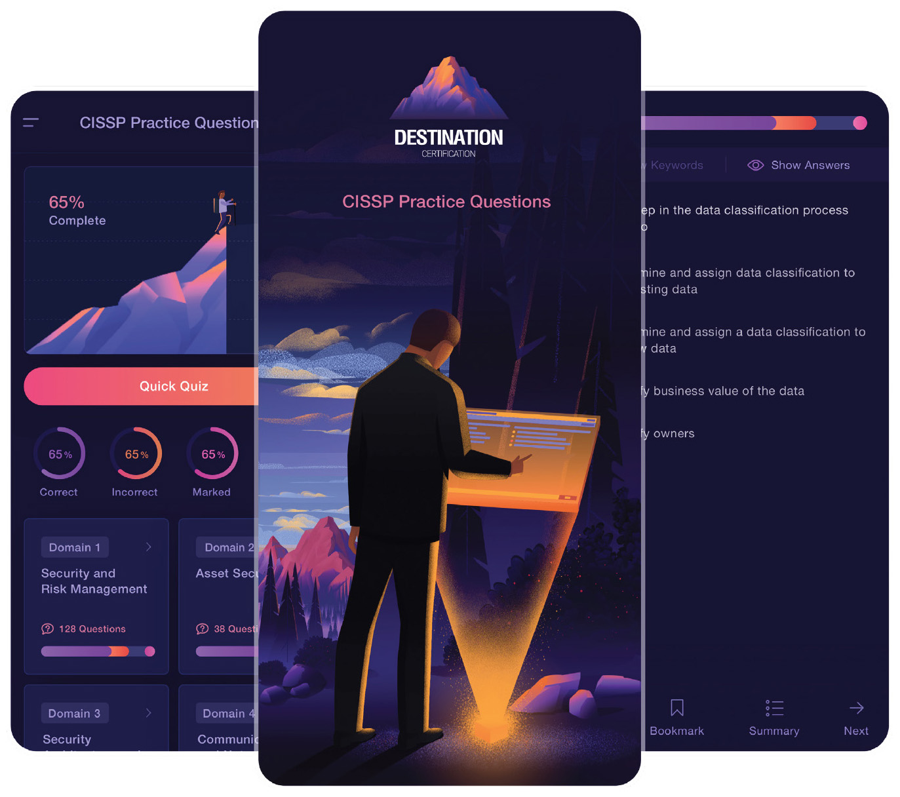
Download the Destination CISSP Practice Question app for Domain 8 practice questions